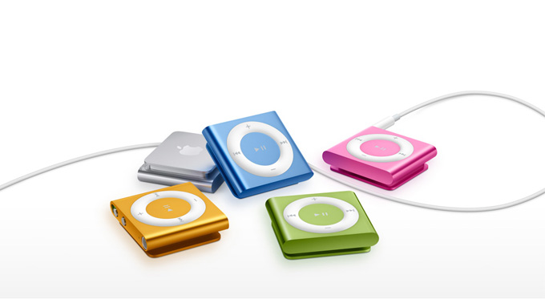
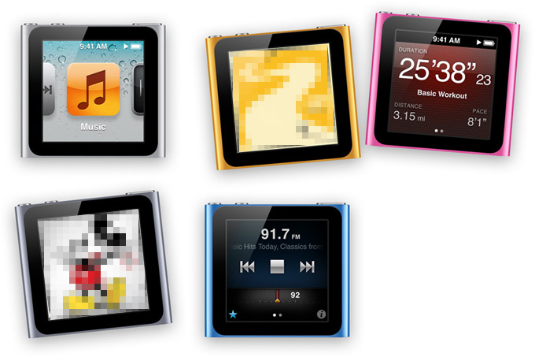
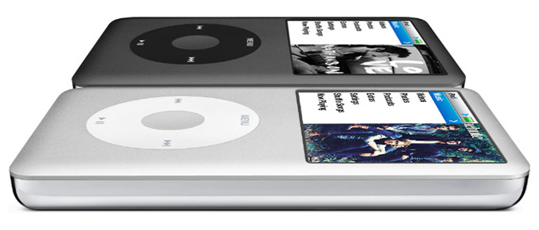

| iPod Shuffle I iPod Nano I iPod Classic |
|  |
디자인. 예쁘고 착용도 쉽습니다.매끄럽고 반짝거리는 알루미늄. 5가지 선명한 컬러.하나의 알루미늄을 그대로 깎아 만든 iPod shuffle의 케이스는 아름답게 빛나는 광택으로 마무리되었습니다. 그래서 새로운 iPod shuffle은 단단하고 매끈하게 느껴지며 내구성도 뛰어나고, 동시에 톡톡 튀는 다양한 색상으로 이상적인 패션 액세서리가 되기도 합니다. 빛나는 은색, 파랑, 초록, 주황, 분홍색 중 하나를 선택하세요. 수백 곡의 노래를 담을 수 있습니다.좋아하는 노래는 한 곡도 빼놓지 마세요. iPod shuffle의 배터리는 한 번 충전으로 최대 15시간까지 사용할 수 있고,1 저장용량도 2GB나 되므로 수백 곡의 노래를 담을 수 있습니다.2 운동 시 혹은 출퇴근길에 항상 듣는 노래를 충분히 담아두세요. 다양한 재생목록, Genius 믹스, Podcast, 오디오북도 넣어보세요. |
|  |
불후의 명곡들. 탭, 탭, 탭... 그리고, 스와이프.멋진 순간에 함께 하는 사운드 트랙. iPod nano가 가장 빛나는 순간입니다. Multi-Touch 디스플레이가 채택되어 원하는 대로 멋진 음악을 감상할 수 있습니다. 탭 한 번으로 음악을 재생하고, '음악'을 탭해 노래, 앨범, 아티스트, 재생목록, 장르, 작곡가별로 원하는 곡을 찾아보세요. 홈 스크린도 취향대로 꾸밀 수 있어 음악을 좋아하는 방식으로 정리할 수도 있습니다. |
|  |
모두 저장합니다.iPod classic의 저장 용량은 160GB이므로 최대 40,000곡이나 200시간 분량의 동영상 또는 25,000장의 사진을 저장할 수 있습니다. 그리고 배터리 수명도 최대 36시간이나 되기 때문에 음악을 정말 오랫동안 즐길 수 있습니다. |
TOP |
| www.apple.co.kr |